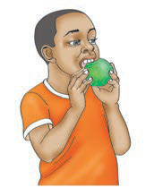
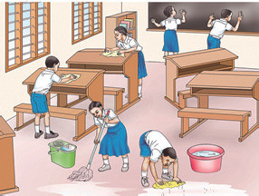
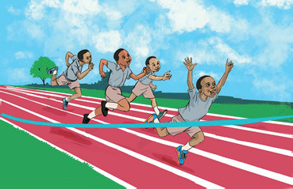

He is Choose an actionplaying the drumsweeping the classroomplaying rope skippingeating a mangosingingcleaning the classroomreading a bookrunningcleaning the blackboardteaching the pupils.


They are Choose an actionplaying the drumsweeping the classroomplaying rope skippingeating a mangosingingcleaning the classroomreading a bookrunningcleaning the blackboardteaching the pupils.

Choose an action from each dropdown. You can also drag an action to its picture, or select a chip and press Enter on the answer field.